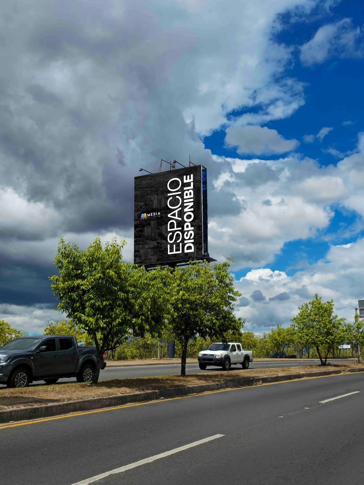
Publicidad exterior y espacios estratégicos para hacer visible tu marca
Trabajamos medios y publicidad exterior para dar presencia a tu marca en espacios donde las personas circulan y toman decisiones.
01 / Qué resolvemos
Encuentra dónde debe estar tu marca
Cada campaña necesita una combinación diferente de ubicación, formato y presencia.
Combinamos creatividad, producción e instalación para que tu mensaje llegue al espacio adecuado.
Publicidad exterior
Lleva tu campaña fuera de la pantalla
Desarrollamos campañas de publicidad exterior en formatos que hacen visible tu marca fuera de la pantalla.
Te orientamos sobre el formato y la ubicación según el objetivo de tu campaña y la disponibilidad vigente.
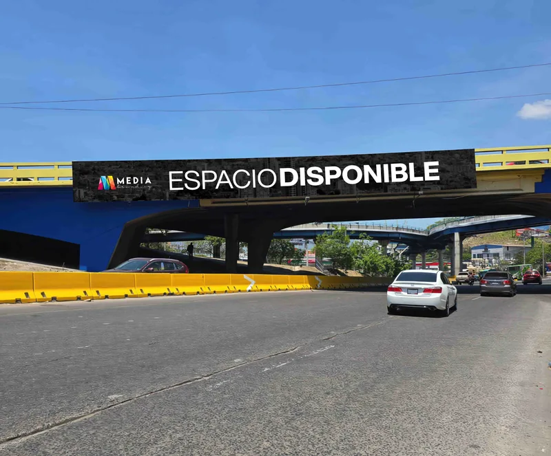
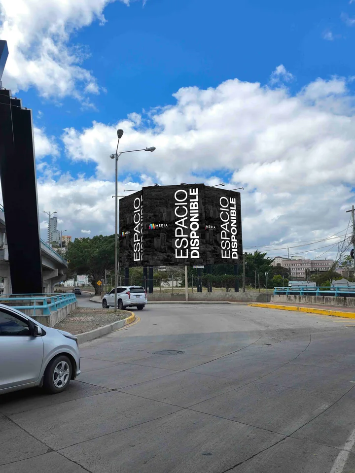
Retail y punto de venta
Presencia de marca donde ocurre la compra
Nuestra trayectoria incluye locaciones en supermercados. Los espacios comerciales disponibles se revisan para cada campaña.
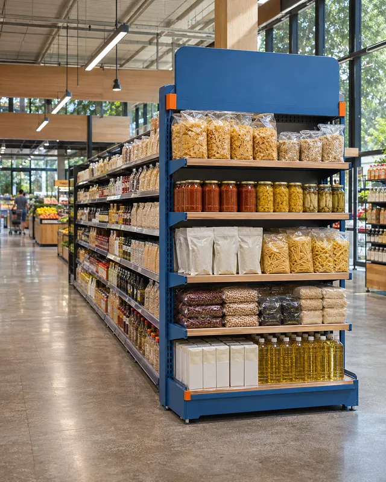
Vallas y formatos publicitarios
Elige el formato adecuado para tu campaña
Trabajamos vallas unipolares, puentes, banderines y minivallas. La selección depende de ubicación, objetivo y disponibilidad.
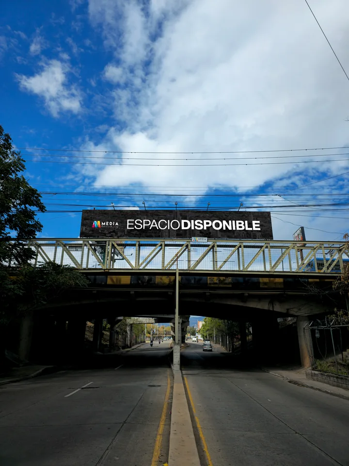
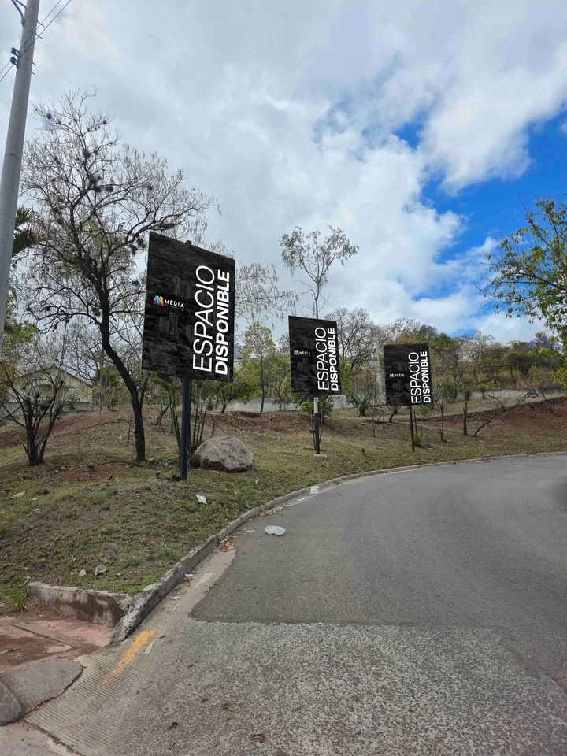
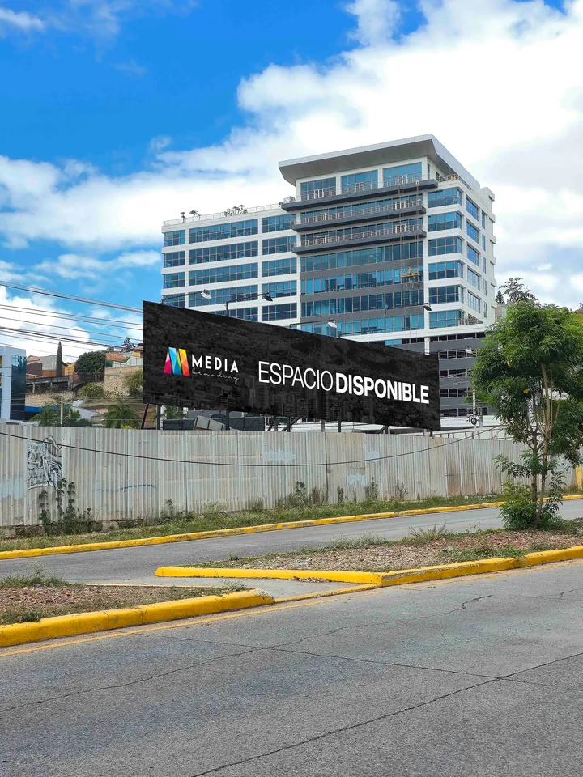
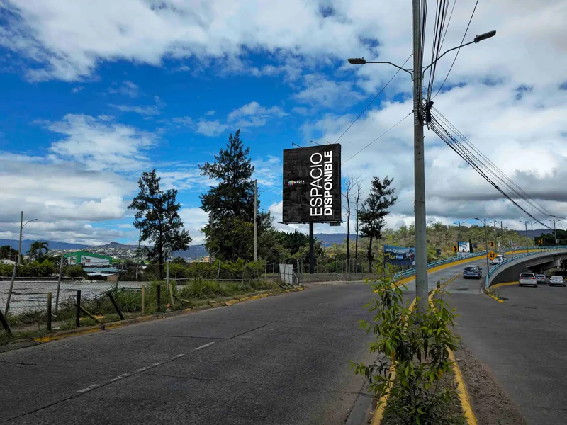
Cobertura
Publicidad exterior en Honduras
Media Branding opera en Honduras. La cobertura disponible para cada campaña depende de las ubicaciones vigentes.
Proyectos
Campañas que ocuparon su espacio
Entre nuestras referencias están banderines Issima, secuencial Six, paraderos Fútbol y unipolar Powerade.
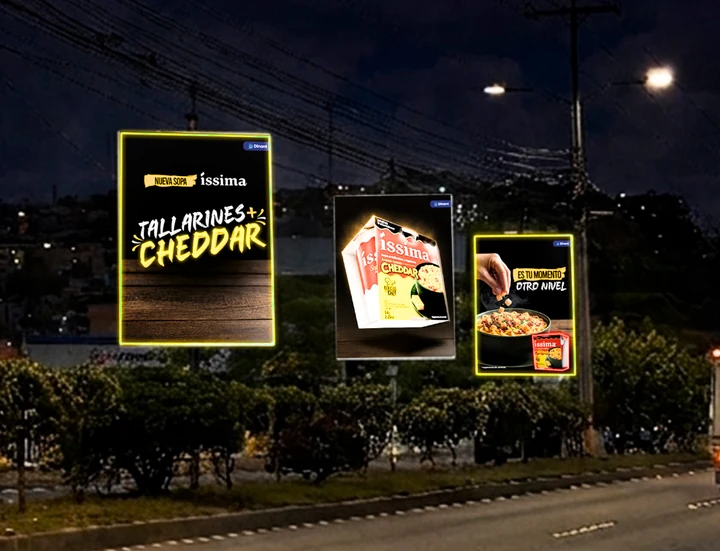
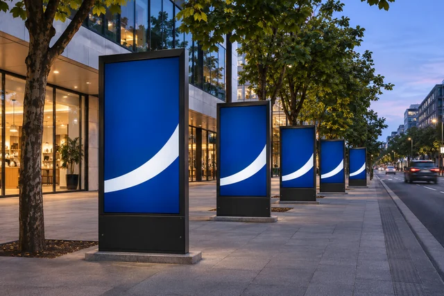
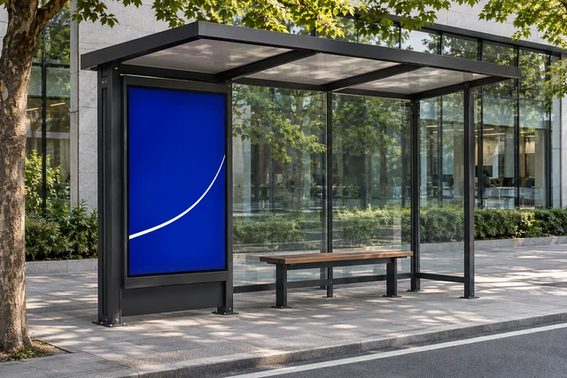
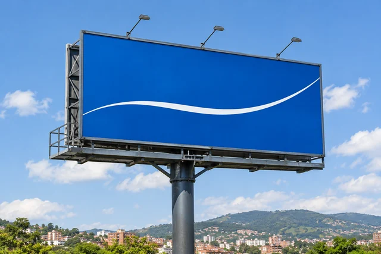
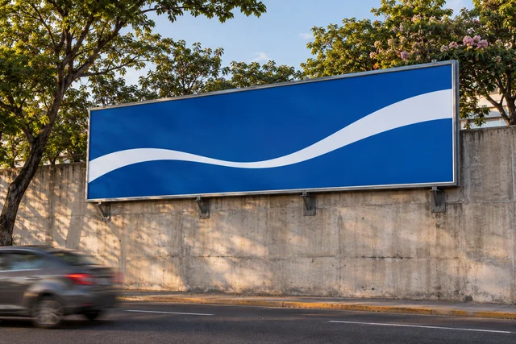
Fotografía 1 de 6: Banderines Issima.
Predios privados
Tu propiedad puede tener más potencial del que imaginas.
¿Tienes un terreno o edificio con buena visibilidad? Cuéntanos dónde está y exploremos juntos su potencial para publicidad exterior.
Terrenos · Edificios · Contacto directo
Proponer mi espacio
- Demostración
predios@example.com
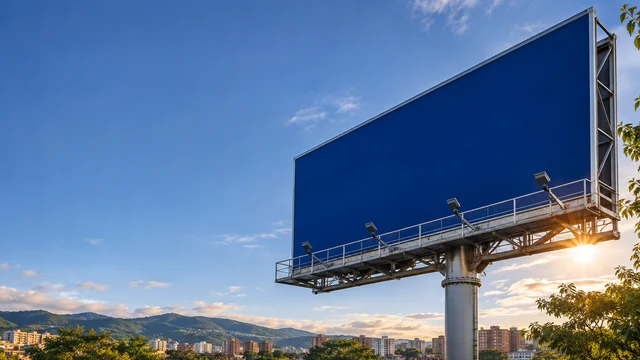
Media Branding
Encuentra el espacio para tu próxima campaña
Cuéntanos qué quieres comunicar, dónde buscas tener presencia y a qué público necesitas llegar.